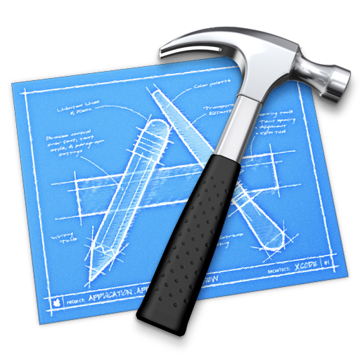

当サイトのご利用にあたって
当ウェブサイトは京都産業大学コンピュータ理工学部の必修科目であるコンピュータ理工学実験のWebオーサリング基礎の実習課題として、作られた非営利目的サイトです。
Webオーサリングとありますが、このサイトはオーサリングツールを使用していません。なぜなら、この実験の目的が以下のようになっているからです。
- W3C、バリデーションチェック、アクセシビリティの理解と調査
- Web ドキュメント標準（XHTML ＋ CSS）の概念の理解
- 調査結果と考察をまとめてWeb ドキュメント標準として作成しレポートとして提出
もちろん、W3C、バリデーション、アクセシビリティなどについて知りたい方も気軽に当サイトをご利用してください。
Web作成に使ったソフト

Xcode
アプリケーション開発やプログラム開発などに使われるツールですが、今回はテキストエディタとして、Xcodeを使いました。
ArtText2
半3次元のロゴやタイトルバナーなどを作る為のツールで、このサイトでは8割がこのツールを使っています。
Aurora3DMaker
3次元のロゴやタイトルバナーなどを作る為のツールで、このサイトでは2割がこのツールを使っています。
LiveQuartz
pngやgifなどの画像を編集・加工するツールで画像を合成したりするときに、よく使います。
当サイトの信頼性
当サイトは決してコピー＆ペーストして、作ったサイトでは決してありません。
画像などもフリー素材から取って来た物でも、ネット上から取って来た物ではありませんし、テンプレートも使っていません。
そして、W3Cによる「Markup検証サービス」および「CSS検証サービス」によって、通ったもののみを皆様にお届けして参ります。
そう、すべては皆様に信頼していただくため、
『自信を持って、全力を尽くし、当サービスを提供します！』